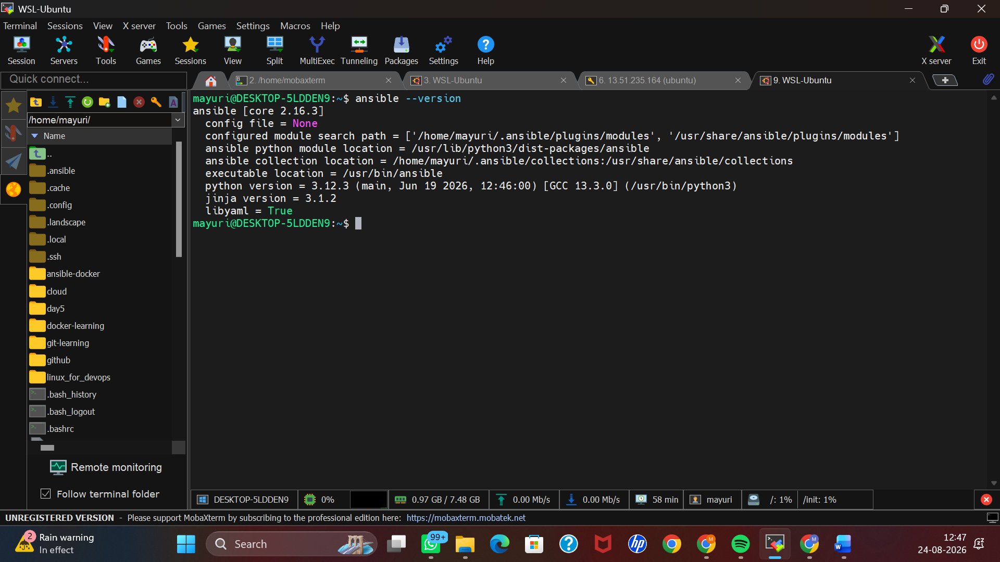
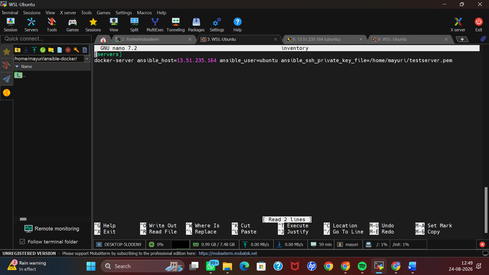
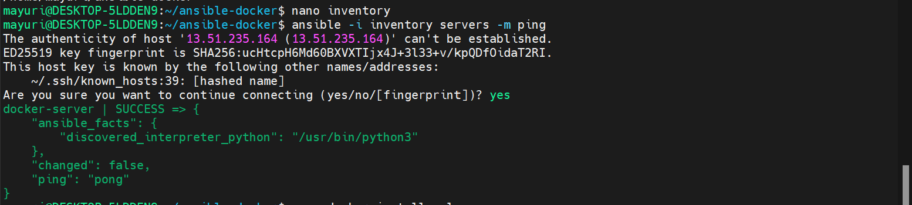
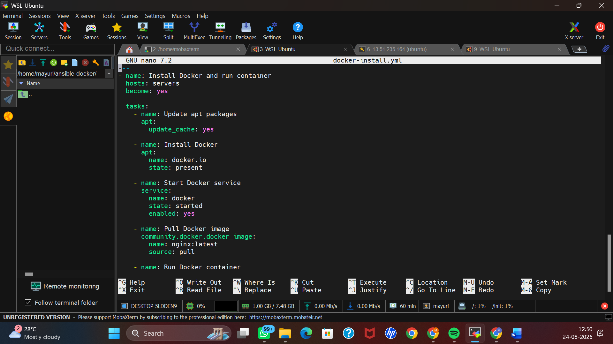
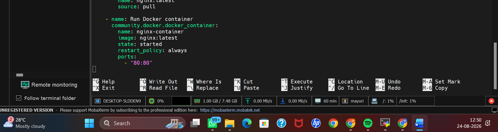

Use Ansible for configuration management to automate Docker installation and Nginx deployment on an AWS EC2 instance.
WSL Ubuntu, Ansible, AWS EC2, Docker and Nginx
WSL Ubuntu
|
| SSH
v
AWS EC2 Ubuntu
|
v
Docker
|
v
Nginx Container
|
v
Port 80
ansible -i inventory servers -m ping
ansible-playbook -i inventory docker-install.yml
docker images
docker ps
curl http://localhost
The Ansible playbook completed successfully and Docker and Nginx were deployed on the EC2 instance.
The Nginx container was running and the Nginx Welcome page was successfully accessed through port 80.
Docker and Nginx were successfully deployed using Ansible configuration management.
Some screenshots from the task execution are shown below.




